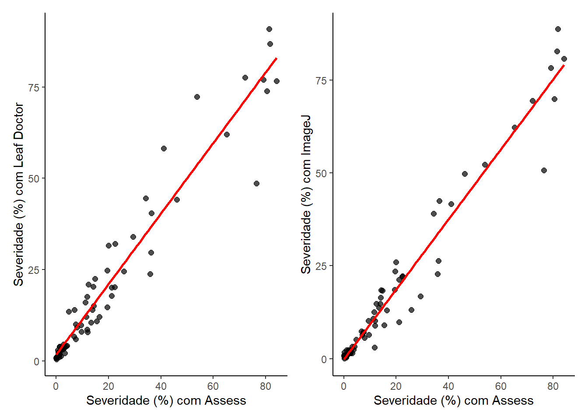
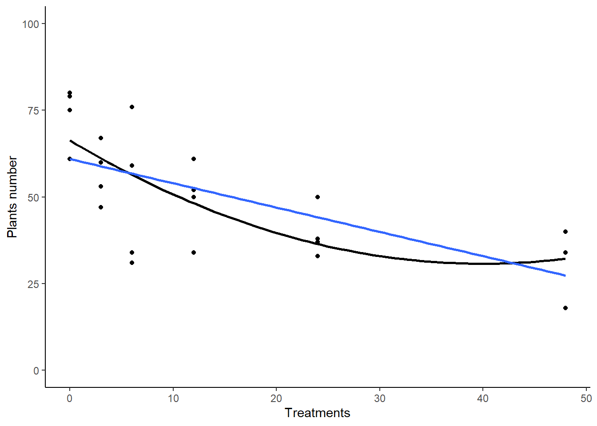
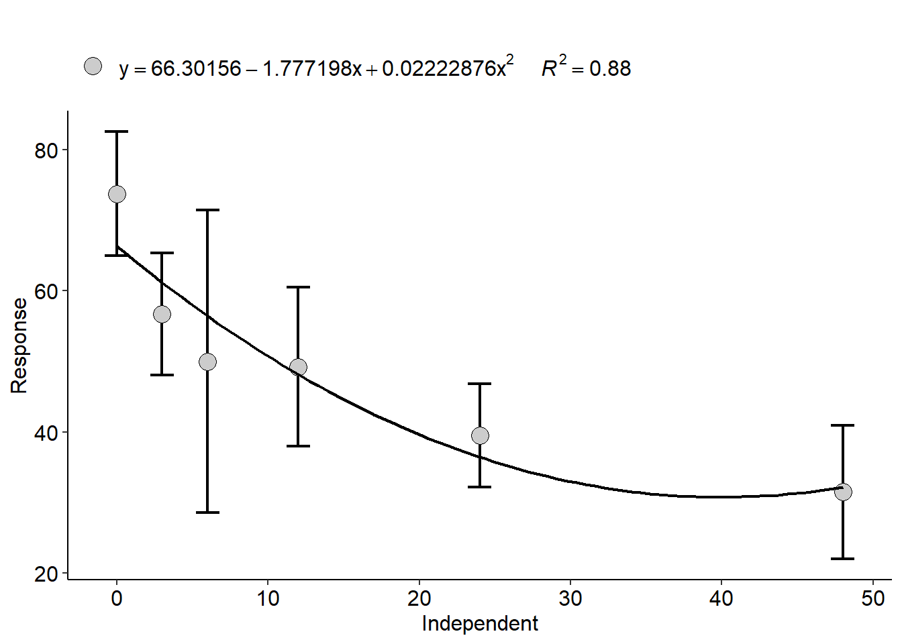
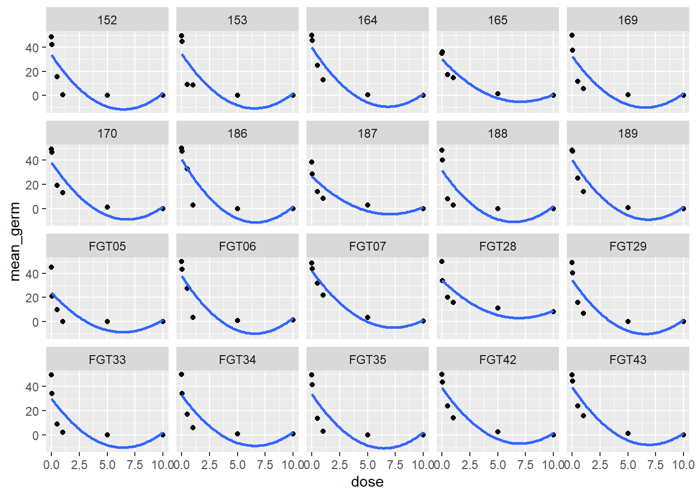
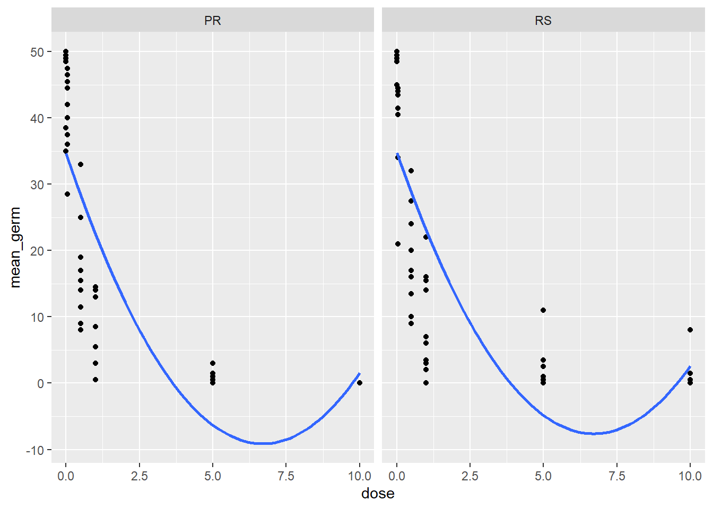
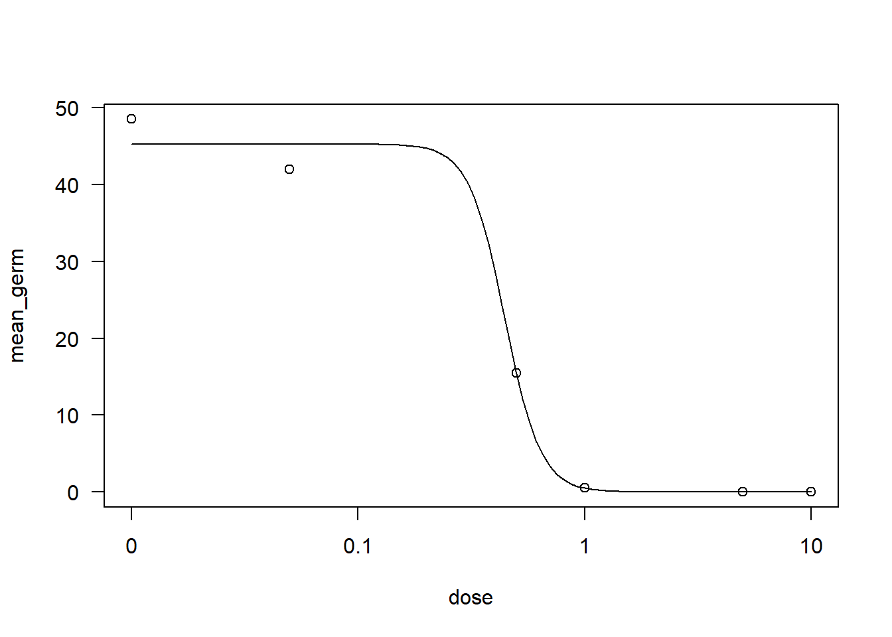

library(gsheet)
library(tidyverse)
library(patchwork)
library(AgroR)
library(drc)
library(ec50estimator)Aula 10
Pacotes
Correlação e Coeficiente de determinação
A correlação é uma associação feita entre duas variáveis. Uma correlação muito conhecida é a correlação de Person. O Coeficiente de correlação (r) é a força da associação entre x e y. Os valores de r são admensionais e podem variar de -1 a 1. Quando:
r = 1 ou r = -1: significa que a que existe forte correlação entre as duas variáveis. O valor negativo significa que existe uma relação inversa entre as variáveis e uma correlação positiva significa que há uma correlação direta, ou seja, a medida que o valor de uma variável aumenta a outra diminui e quando uma aumenta a outra também aumenta, respectivamente;
r = 0: significa que não existe correlação entre as variáveis, ou seja, a variação de uma não interfere na variação da outra variável.
Mas não necessariamente os valores de r serão discretos, como apresentado acima, o valor de r é continuo entre os extremos apresentados. Logo, para interpretar esses valores de correlação:
r > 0,7: Positivo ou negativo, CORRELAÇÃO FORTE;
r entre 0,5 e 0,7: Positivo ou negativo, CORRELAÇÃO MODERADA;
r entre 0,3 a 0,5: Positivo ou negativo, CORRELAÇÃO FRACA;
r entre 0 e 0,3: Positivo ou negativo, CORRELAÇÃO DESPREZÍVEL.
O Coeficiente de Determinação (r^2), varia entre 0 e 1, e retrata o quanto de y é explicado pela variação de x. Seu cálculo é simples e resume-se em elevar o r ao quadrado.
Banco de dados
Os dados se referem a medição de severidade de uma determinada doença na cultura da roseira, tomate, café e feijão, utilizando diretentes softwares, Assess, LeafDoctor e ImageJ, para determinar tal severidade.
dados <- gsheet2tbl('https://docs.google.com/spreadsheets/d/1bq2N19DcZdtax2fQW9OHSGMR0X2__Z9T/edit#gid=373270992')Gráfico
Abaixo, seguimos com a eleboração de gráficos de dispersão, comparando duas variáveis e ajustando uma reta.
p1 <- dados |>
ggplot(aes(x = Assess,y = LeafDoctor)) +
geom_point(alpha = 0.7, size = 2) +
theme_classic() +
geom_smooth(method = 'lm', se = F, color = 'red') +
labs(y = 'Severidade (%) com Leaf Doctor',
x = 'Severidade (%) com Assess')
p2 <- dados |>
ggplot(aes(x = Assess, y = ImageJ)) +
geom_point(alpha = 0.7, size = 2) +
theme_classic() +
geom_smooth(method = 'lm', se = F, color = 'red') +
labs(y = 'Severidade (%) com ImageJ',
x = 'Severidade (%) com Assess')
p1 + p2`geom_smooth()` using formula = 'y ~ x'
`geom_smooth()` using formula = 'y ~ x'
É perceptível que existe uma correlação positiva entre os softweres confrontados.
Matriz de correlação
Utilizando a função corgraph() do pacote AgroR é possível criar uma matriz de correalação. Como esperado existe forte correlação positiva entre as severidades mensuradas pelos softwares. Dessa forma, pode-se utilizar qualquer programa para calcular a severidade já que o Assesa é pago.
imgs <- dados |>
dplyr::select(3:5)
corgraph(imgs) Var1 Var2 cor p
2 LeafDoctor Assess 0.9666367 5.972544e-42
3 ImageJ Assess 0.9776918 8.143613e-48
6 ImageJ LeafDoctor 0.9797478 3.144091e-49
cor.test(dados$Assess, dados$LeafDoctor)
Pearson's product-moment correlation
data: dados$Assess and dados$LeafDoctor
t = 31.119, df = 68, p-value < 2.2e-16
alternative hypothesis: true correlation is not equal to 0
95 percent confidence interval:
0.9466882 0.9792005
sample estimates:
cor
0.9666367 cor.test(dados$Assess, dados$ImageJ)
Pearson's product-moment correlation
data: dados$Assess and dados$ImageJ
t = 38.383, df = 68, p-value < 2.2e-16
alternative hypothesis: true correlation is not equal to 0
95 percent confidence interval:
0.9642331 0.9861219
sample estimates:
cor
0.9776918 Outro pacote interessante que que monta uma matriz de correlação é o pacote corrplot.
library(corrplot)Warning: package 'corrplot' was built under R version 4.3.3corrplot 0.92 loadedcor_img <- cor(imgs)
corrplot(cor_img, method = 'square', type = 'lower')
Banco de dados
Retornamos com banco de dados já utilizados em aulas anteriores. No banco está contido variáveis respostas de produtividade, DFCs e severidade de ferrugem. O código a seguir, calcula a correlação entre as variáveis de doença e a variável produtividade. Já é de conhecimento comum, que, quanto mais uma cultura sofre danos devido ao ataque de doenças há um reflexo negativo na sua produtividade, ou seja, menor produtividade. Logo, com base nos cálculos a seguir, esperamos que as correlações sejam negativas.
campo <- gsheet2tbl("https://docs.google.com/spreadsheets/d/1bq2N19DcZdtax2fQW9OHSGMR0X2__Z9T/edit#gid=866852711")
campo2 <- campo |>
dplyr::select(DFC, FER, PROD)
corgraph(campo2) Var1 Var2 cor p
2 FER DFC 0.9316978 9.864101e-15
3 PROD DFC -0.6928161 1.110652e-05
6 PROD FER -0.6258321 1.277444e-04
dfc <- cor.test(campo2$PROD, campo2$DFC)
fer <- cor.test(campo2$PROD, campo2$FER)
dfc; fer
Pearson's product-moment correlation
data: campo2$PROD and campo2$DFC
t = -5.2623, df = 30, p-value = 1.111e-05
alternative hypothesis: true correlation is not equal to 0
95 percent confidence interval:
-0.8388581 -0.4537361
sample estimates:
cor
-0.6928161
Pearson's product-moment correlation
data: campo2$PROD and campo2$FER
t = -4.3949, df = 30, p-value = 0.0001277
alternative hypothesis: true correlation is not equal to 0
95 percent confidence interval:
-0.7999565 -0.3544981
sample estimates:
cor
-0.6258321 De fato, as correlações entre as variáveis doenção versus produtividade foram negativas e moderadas.
O código abaixo, filtra os intervalos de confiança entre as correlações calculadas entre as variáveis de doenças versus produtividade.
dfc$conf.int[1:2][1] -0.8388581 -0.4537361fer$conf.int[1:2][1] -0.7999565 -0.3544981Modelos Lineares
Banco de dados
Seguimos com banco de dados de estande de plantas para ajuste de modelos.
estande <- gsheet2tbl('https://docs.google.com/spreadsheets/d/1bq2N19DcZdtax2fQW9OHSGMR0X2__Z9T/edit#gid=401662555')Gráfico
O gráfico abixo apresenta a dispersão dos dados e duas curvas, uma quadrática e outra linear aos dados. Veja:
estande |>
filter(exp == 2) |>
ggplot(aes(trat, nplants)) +
geom_point() +
ylim(0, 100) +
geom_smooth(method = 'lm', se = F, formula = y ~ poly(x, 2), color = 'black') +
geom_smooth(method = 'lm', se = F) +
theme_classic() +
labs(y = 'Plants number',
x = 'Treatments')`geom_smooth()` using formula = 'y ~ x'
Ajuste de modelo linear de 1° grau
Na função lm(), ajustamos um modelo linear de primeira ordem, veja:
exp2 <- estande |>
filter(exp == 2)
lm2 <- lm(nplants ~trat, data = exp2)
summary(lm2)
Call:
lm(formula = nplants ~ trat, data = exp2)
Residuals:
Min 1Q Median 3Q Max
-25.7816 -7.7150 0.5653 8.1929 19.2184
Coefficients:
Estimate Std. Error t value Pr(>|t|)
(Intercept) 60.9857 3.6304 16.798 4.93e-14 ***
trat -0.7007 0.1605 -4.365 0.000247 ***
---
Signif. codes: 0 '***' 0.001 '**' 0.01 '*' 0.05 '.' 0.1 ' ' 1
Residual standard error: 12.95 on 22 degrees of freedom
Multiple R-squared: 0.4641, Adjusted R-squared: 0.4398
F-statistic: 19.05 on 1 and 22 DF, p-value: 0.0002473hist(residuals(lm2))
Ajuste de modelo linear de 2° grau
Observe que foi criada mais uma coluna com valores elevados ao quadrado. No modelo, a variável elevada é acrescida por meio de simbolo “+”. Seguimos com um resumo do modelo, utilizando a função summary(), onde verificamos os valores dos coeficientes da regressão e seu intercepto. Posteriormente, calculou-se o Critério de Akaike, pela função AIC(), É muito útil para comparar diferentes modelos e selecionar o melhor e significa dizer que, quanto menor o valor de AIC, melhor é o modelo.
exp2$trat2 <- exp2$trat^2
lm3 <- lm(nplants ~ trat + trat2, data = exp2)
summary(lm3)
Call:
lm(formula = nplants ~ trat + trat2, data = exp2)
Residuals:
Min 1Q Median 3Q Max
-25.439 -6.019 1.789 8.016 19.561
Coefficients:
Estimate Std. Error t value Pr(>|t|)
(Intercept) 66.30156 4.42097 14.997 1.08e-12 ***
trat -1.77720 0.58467 -3.040 0.00623 **
trat2 0.02223 0.01166 1.906 0.07036 .
---
Signif. codes: 0 '***' 0.001 '**' 0.01 '*' 0.05 '.' 0.1 ' ' 1
Residual standard error: 12.24 on 21 degrees of freedom
Multiple R-squared: 0.5432, Adjusted R-squared: 0.4997
F-statistic: 12.49 on 2 and 21 DF, p-value: 0.0002675AIC(lm3)[1] 193.1284A função, polynomial(), do pacote AgroR, em conjunto com o código abaixo permite plotar a curva ajustada ao grau de interesse, com os pontos e a equação. Veja:
with(exp2, polynomial(trat, nplants, grau = 2))
----------------------------------------------------
Regression Models
----------------------------------------------------
Estimate Std. Error t value Pr(>|t|)
(Intercept) 66.30156250 4.42096799 14.997069 1.079972e-12
trat -1.77719814 0.58467380 -3.039640 6.230050e-03
I(trat^2) 0.02222876 0.01165948 1.906496 7.036247e-02
----------------------------------------------------
Deviations from regression
----------------------------------------------------
Df SSq MSQ F p-value
Linear 1 3196.2031 3196.2031 21.823293 0.0001899378
Quadratic 1 544.5029 544.5029 3.717801 0.0697619482
Deviation 3 509.6690 169.8897 1.159986 0.3523240106
Residual 18 2636.2500 146.4583 [[1]]
Modelos Não-lineares
Banco de dados
O próximo banco de dados que iremos utilizar a seguir, refere-se a dados de sensibilidade a fungicidas.
germinacao <- gsheet2tbl('https://docs.google.com/spreadsheets/d/1bq2N19DcZdtax2fQW9OHSGMR0X2__Z9T/edit#gid=465348652')Gráfico
germ <- germinacao |>
group_by(code, state, dose) |>
dplyr::select(-replicate) |>
summarise(mean_germ = mean(germination), .groups = 'drop')
germ |>
ggplot(aes(dose, mean_germ)) +
geom_point() +
facet_wrap(~code) +
geom_smooth(method = 'lm', se = F, formula = y ~ poly(x, 2))
Sensibilidade a fungicida dos isolados pro estado:
germ |>
ggplot(aes(dose, mean_germ)) +
geom_point() +
facet_wrap(~state) +
geom_smooth(method = 'lm', se = F, formula = y ~ poly(x, 2))
Ajuste do modelo
No código abaixo, utilizamos a dunção drm() do pacote drc, para ajutar modelos não lineares. O argumento fct = permite que seja inserido qual modelo não linear seja ajustado. Para mais sobre o uso da função execute o comando no console: ?drm.
isolado.x <- germ |>
filter(code == 152)
drc1 <- drm(mean_germ ~ dose, data = isolado.x, fct = LL.3())
AIC(drc1)[1] 32.57898plot(drc1)
ED(drc1, 50, interval = 'delta')
Estimated effective doses
Estimate Std. Error Lower Upper
e:1:50 0.444356 0.077789 0.196796 0.691916summary(drc1)
Model fitted: Log-logistic (ED50 as parameter) with lower limit at 0 (3 parms)
Parameter estimates:
Estimate Std. Error t-value p-value
b:(Intercept) 5.526512 7.765348 0.7117 0.5280076
d:(Intercept) 45.250173 1.876343 24.1162 0.0001563 ***
e:(Intercept) 0.444356 0.077789 5.7123 0.0106434 *
---
Signif. codes: 0 '***' 0.001 '**' 0.01 '*' 0.05 '.' 0.1 ' ' 1
Residual standard error:
2.65351 (3 degrees of freedom)Determinação da EC50
A determinação da EC50 é muito utilizada quando se trabalha com produtos destinados ao manejo de pragas e doenças. Corresponde a concentração do produto capaz de inibir 50%, por exemplo, da população, do desenvolvimento de um fungo, no índice de germinação de esporos.
Um pacote que já possui funções para realizar esses cálculos é o pacote ec50estimator, com a função estimate_EC50(). Nesse caso, determinou-se a EC50 sobre a germinação de esporos para cada isolado, com ajuste de modelo logístico no argumento fct =. Com base no resultado coseguimos identificar que o isolado FGT05 foi o mais sensível ao fungicida testado.
df_ec50 <- estimate_EC50(mean_germ ~ dose,
data = germ,
isolate_col = "code",
interval = "delta",
fct = drc ::LL.3())
df_ec50 |>
arrange(Estimate) ID strata Estimate Std..Error Lower Upper
1 FGT05 0.04483862 0.019290890 -0.016553601 0.1062308
2 FGT33 0.10481627 0.013065221 0.063236910 0.1463956
3 169 0.14722311 0.009555688 0.116812646 0.1776336
4 FGT34 0.14773114 0.047003373 -0.001854568 0.2973169
5 188 0.15297172 0.004284691 0.139335920 0.1666075
6 FGT35 0.20315392 0.038984604 0.079087515 0.3272203
7 153 0.20379664 0.042373512 0.068945217 0.3386481
8 187 0.21563338 0.036639446 0.099030315 0.3322365
9 FGT28 0.22608141 0.033600742 0.119148854 0.3330140
10 FGT29 0.23601652 0.034933881 0.124841318 0.3471917
11 170 0.37503889 0.043207328 0.237533889 0.5125439
12 152 0.44435629 0.077789240 0.196796213 0.6919164
13 FGT42 0.45000559 0.059685890 0.260058448 0.6399527
14 FGT43 0.49589549 0.060850771 0.302241178 0.6895498
15 164 0.50775844 0.047248266 0.357393370 0.6581235
16 189 0.53106193 0.023130936 0.457448972 0.6046749
17 FGT06 0.54497946 0.034834602 0.434120211 0.6558387
18 165 0.55839613 0.114195113 0.194976315 0.9218159
19 186 0.57975744 0.013332268 0.537328208 0.6221867
20 FGT07 0.88770053 0.079917704 0.633366725 1.1420343